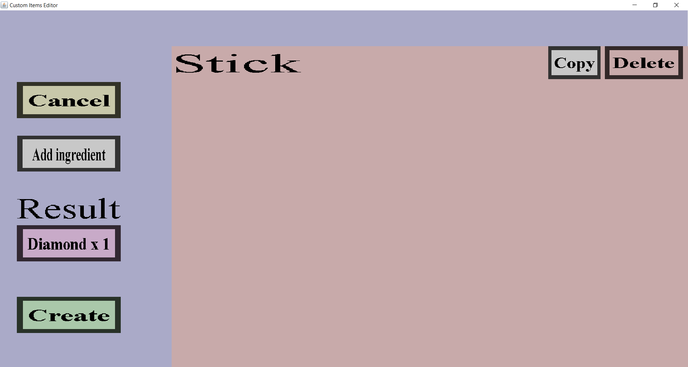

The create shapeless recipe menu is the menu from which you can add, edit and delete crafting ingredients for a shapeless recipe. If you are editing a shapeless recipe that crafts a stick into a diamond, it should look like this:
For more information about a shapeless recipe, visit the respective page on the Minecraft Wiki The menu has a 'Cancel', 'Add ingredient', result and 'Apply' or 'Create' button and 'Copy' and 'Delete' buttons for each ingredient the recipe currently has.
The 'Cancel' button will take you back to the Recipe Menu, disregarding the changes you made. There is no way to recover any changes you have made after you pressed the 'Cancel' button.
Underneath the result text is a purple/pinkish button, that when clicked opens up a submenu where you can select which type of item will be crafted with the current crafting recipe. For more information, visit this page.
The 'Add ingredient' button opens up a submenu where you can select which type of item will be part of the crafting recipe. For more information, visit this page.
If you are adding a lot of crafting recipes, you might note that this requires a lot of time and clicks. To speed this up, you can use the hotkeys c, v, or d. These are for Custom item, Vanilla item and vanilla item with Datavalue respectively.
The 'Apply' will only be visible when you are editing an existing recipe. This button does the same thing as the 'Cancel' button except that it does remember the changes you have made. Do note that the changes are not saved physically until you have pressed the 'Save' button in the Item Set Edit Menu.
The 'Create' button will only be visible when you are adding a new shapeless recipe. Clicking it will add this new recipe and then take you back to the recipe overview.
The 'Copy' button will copy the corresponding ingredient and insert it as new ingredient. So if you copy a Stick ingredient, the recipe will require 1 stick more.
Pressing this delete will delete the ingredient from the crafting recipe. You can still revert this deletion by clicking the 'Cancel' button.